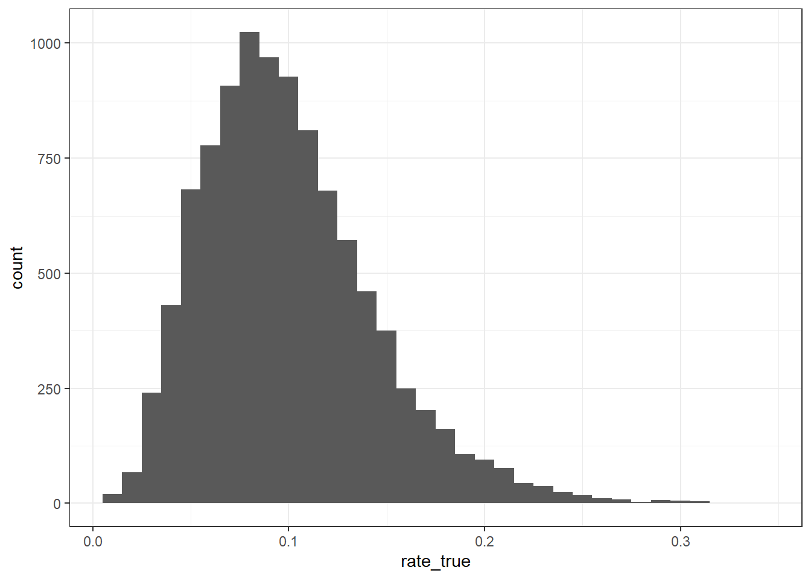
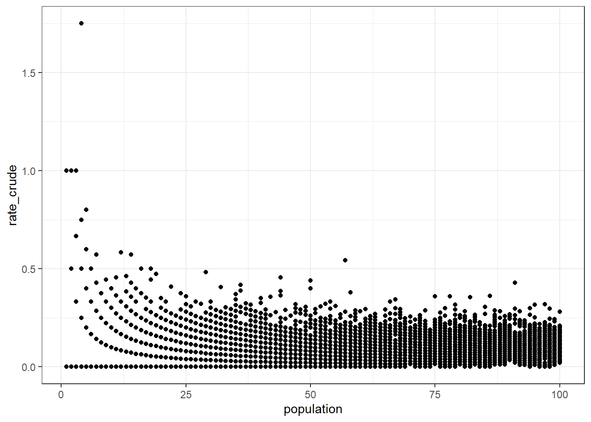
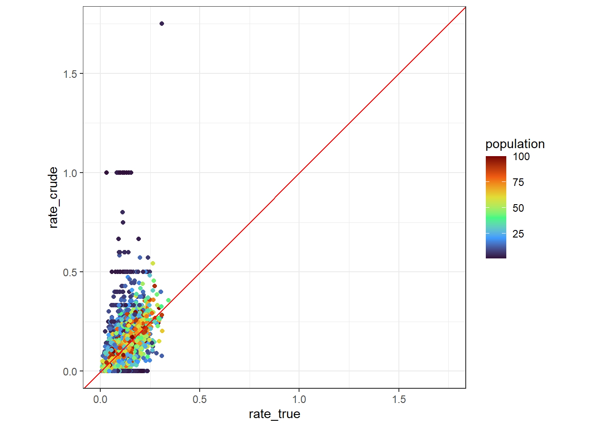
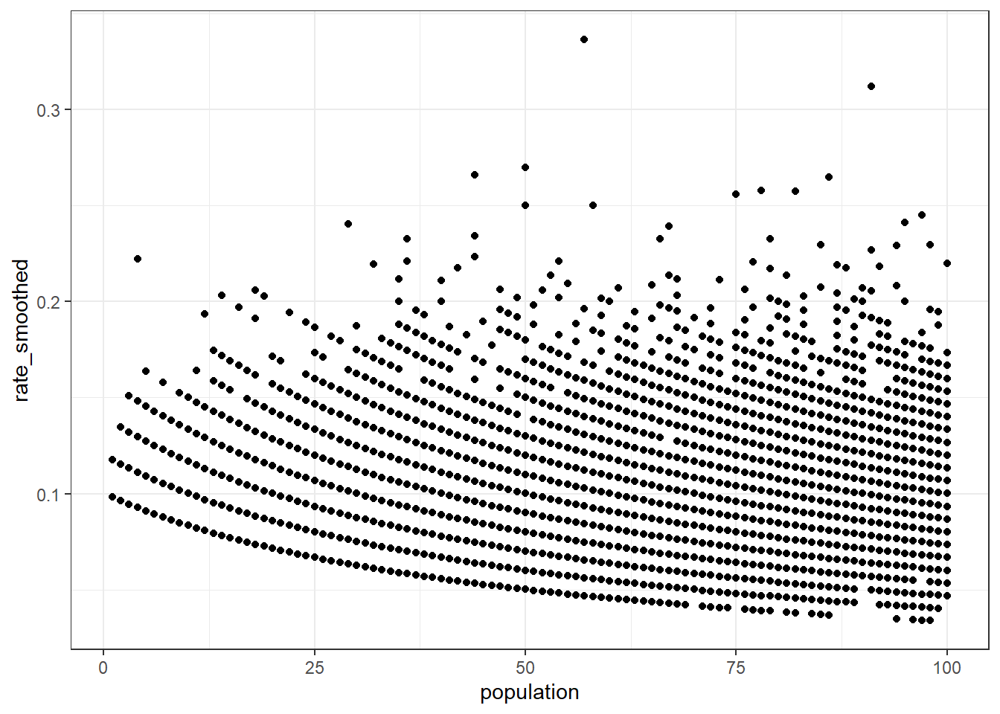
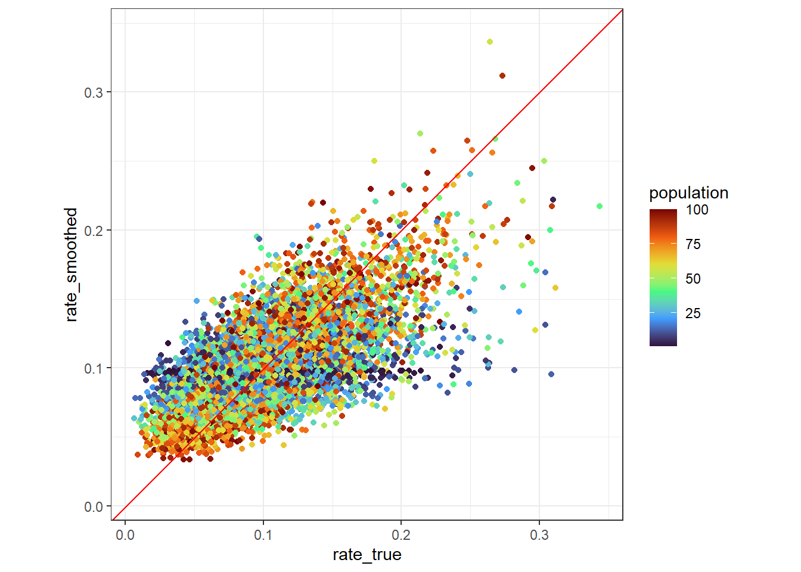

library(tidyverse)
theme_set(theme_bw())この記事では，以下のような割合データ（割り算値）を扱うときにしばしば生じる少数問題への対処法について説明します．
- 地域別の感染症の罹患率
- 店舗別の一定時間あたりの来店客数
- 学校別の難関校合格率
少数問題（small number problem）とは，観測値が小さい場合に割合データのばらつきが大きくなることを指します． 以下では，カウントデータが従うことが多いとされるポアソン分布を対象に少数問題の対処法を考えます（二項分布でも同様の議論を展開することができます）． 分母にあたる人口等が\(N\)，割合の真値が\(\theta\)のとき，分子にあたるカウントデータ（感染者数等）\(n\)は以下のようなポアソン分布に従うと考えられます．
\[ n \sim \text{Poisson}(N \theta) \]
さらに，このポアソン分布の分散は以下のように表されます．
\[ \text{Var}[n] = N \theta \]
割合（真値）を推定するための素朴な方法として，\(n\)を\(N\)で割ることが考えられます． しかし，この方法で得られる割合の分散は以下のように，\(N\)が小さいときに分散が大きくなるという性質を持っています． こうした性質は，ポアソン分布や二項分布のように分散（観測ノイズ）が期待値と比例する分布に共通するものです．
\[ \text{Var}\left[\frac{n}{N}\right] = \frac{\theta}{N} \]
こうした観測ノイズの性質は，たとえば難関校合格率の学校別ランキング等を考えた場合に問題となる可能性があります． 総受験者数が大きく異なる以下のような学校Aと学校Bを比べてみましょう．
| 学校 | 総受験者数 | 難関校合格者数 | 難関校合格率 |
|---|---|---|---|
| 学校A | 100 | 30 | 30 % |
| 学校B | 5 | 2 | 40 % |
この場合，学校Bでは，合格者数が少し変動しただけで難関校合格率が大きく変化してしまうため，学校Aの難関校合格率と比べて精度が低いと考えられます． このような状況で，難関校合格率ランキングを作ると，難関校合格率の真値は必ずしも高くないがたまたま合格者数が多かった総受験者数の少ない学校等が上位に順位付けされることとなります． こうした現象は，今後の難関校合格率を予想する場合等に問題となりえます．
以下では，こうした複数地域・店舗・学校等のデータの観測値のみを用いて割合データの平滑化を行う方法について説明します．
ベイズの定理を用いた平滑化
カウントデータがポアソン分布，割合の真値がポアソン分布の共役事前分布であるガンマ分布に従うと仮定します．
\[ \begin{align} \theta &\sim \text{Gamma}(\alpha, \beta) \\ n \mid \theta &\sim \text{Poisson}(N \theta) \end{align} \]
すると，ベイズの定理を用いて，\(\theta\)の事後分布，すなわち観測値\(n\)が与えられたときの\(\theta\)の分布は以下のようになります．
\[ \begin{align} P(\theta \mid n) &\propto P(n \mid \theta) P(\theta) \\ &\propto (N \theta)^n \exp(-N \theta) \cdot \theta^{\alpha - 1} \exp(-\beta\theta) \\ &\propto \theta^{n + \alpha - 1} \exp[-(N + \beta)\theta] \\ \theta \mid n &\sim \text{Gamma}(n + \alpha, N + \beta) \end{align} \]
そのため，\(\theta\)の事後分布の期待値は以下のような簡単な式で表され，この式を用いることで，観測ノイズを除去（平滑化）することができます．
\[ \text{E}[\theta \mid n] = \frac{n + \alpha}{N + \beta} \]
一方で，こうした平滑化を行うためには，\(\alpha\)と\(\beta\)の値を決める必要があります． 以下では，事前分布のパラメータ\(\alpha\)と\(\beta\)を観測値から推定する方法について説明します．
経験ベイズ法による事前分布のパラメータ推定
経験ベイズ法は，観測値から事前分布のパラメータを（経験的に）推定する方法です． 経験ベイズ法における事前分布のパラメータの推定方法として，モーメント法や最尤法を用いる方法が考えられますが，以下では，最尤法を用いた方法について説明します．
最尤法を行うにあたって，事前に\(n\)が従う分布を確かめておきましょう． \(n\)は，以下のようなガンマ分布とポアソン分布の混合分布に従うと考えられます． 通常，混合分布を求めるには積分計算が必要となってしまいますが，ガンマ分布とポアソン分布の混合分布は，負の二項分布に従うことが知られています． そのため，あらかじめ以下のように\(n\)の確率分布を求めておきます．
\[ \begin{align} P(n) &= \int_{0}^{\infty} P(n \mid \theta) P(\theta) d\theta \\ &= \int_{0}^{\infty} \frac{1}{n!} (N \theta)^n \exp(-N \theta) \cdot \frac{\beta^{\alpha}}{\Gamma(\alpha)} \theta^{\alpha - 1} \exp(-\beta\theta) d\theta \\ &= \frac{N^n \beta^{\alpha}}{n! \Gamma(\alpha)} \int_{0}^{\infty} \theta^{n + \alpha - 1} \exp[-(N + \beta)\theta] d\theta \\ &= \frac{N^n \beta^{\alpha}}{n! \Gamma(\alpha)} \cdot \frac{\Gamma(n + \alpha)}{(N + \beta)^{n + \alpha}} \quad \text{(ガンマ分布のカーネルの積分は正規化定数の逆数に等しい)} \\ &= \frac{\Gamma(n + \alpha)}{\Gamma(n + 1) \Gamma(\alpha)} \left( \frac{N}{N + \beta} \right)^{n} \left( \frac{\beta}{N + \beta} \right)^\alpha \\ &= \binom{n + \alpha - 1}{n} \left( \frac{\frac{\alpha}{\beta} N}{\frac{\alpha}{\beta} N + \alpha} \right)^{n} \left( \frac{\alpha}{\frac{\alpha}{\beta} N + \alpha} \right)^{\alpha} \\ \end{align} \]
以上の式より，\(n\)は以下のような負の二項分布に従うことがわかります． ただし，負の二項分布にはいくつかのパラメータ設定方法があるため注意が必要です． ここでのパラメータ設定方法は，stanのNegBinomial2と同様です．
\[ n \sim \text{NegBinomial2}(\mu, \alpha), \quad \mu = \frac{\alpha}{\beta} N \]
このように，\(n\)は，負の二項分布と呼ばれる一般的な確率分布に従うことがわかるため，Rで提供されている既存の関数を用いて最尤法を行うことができます． 以下では，実験的に作成したテストデータを対象に，R MASSパッケージのglm.nb()関数を用いて最尤法を行い，割合データの平滑化を行ってみます．
平滑化の実例
テストデータの作成
まず，サンプルサイズを10,000とし，割合の真値を\(\alpha = 5, \beta = 50\)のガンマ分布からランダムに生成します．
set.seed(1234)
# サンプルサイズ
n <- 1e4
# 割合 (真値)
alpha_true <- 5
beta_true <- 50
rate_true <- rgamma(n, shape = alpha_true, rate = beta_true)割合の真値rate_trueは以下のような分布を持ちます．
tibble(rate_true = rate_true) |>
ggplot(aes(rate_true)) +
geom_histogram(binwidth = 1e-2)
次に，人口（分母）populationを1から100までの整数からランダムに選びます． さらに，割合の真値rate_trueに基づき，ポアソン分布からカウントデータ（分子）countを生成し，これらの結果をデータフレームdataにまとめます．
# 人口 (分母)
x <- 1:100
population <- sample(x, n, replace = TRUE)
# カウントデータ (分子)
count <- rpois(n, rate_true * population)
data <- tibble(
population = population,
rate_true = rate_true,
count = count
)
head(data, n = 10)少数問題の確認
それでは，テストデータを用いて，少数問題が発生しているかを確認してみましょう． まずは，割り算を用いた割合の推定値rate_crudeを計算し，populationをX軸・rate_crudeをY軸にとる散布図を描画します． すると，以下のように，populationが小さい場合に，rate_crudeが大きくなる傾向がみられることがわかります． もし，手元のデータでも同様の傾向がみられる場合，少数問題が発生している可能性があります．
data_crude <- data |>
mutate(
rate_crude = count / population
)
head(data_crude, n = 10)data_crude |>
ggplot(aes(population, rate_crude)) +
geom_point()
通常のデータでは割合の真値rate_trueはわかりませんが，ここではrate_trueとrate_crudeの関係も確認することができます． 以下のように，rate_trueをX軸・rate_crudeをY軸にとる散布図を描画すると，populationが小さい場合に，rate_crudeが45度線から大きく外れる傾向がみられることがわかります． 以上の結果より，テストデータで少数問題が発生していることが確認できました．
data_crude |>
ggplot(aes(rate_true, rate_crude, color = population)) +
geom_point() +
geom_abline(color = "red") +
scale_color_viridis_c(option = "turbo") +
tune::coord_obs_pred()
負の二項分布を用いた平滑化
それでは，負の二項分布を用いて平滑化を行ってみましょう． ここでは，Rで簡単に利用可能なMASSパッケージのglm.nb()関数を用いて，最尤法を行います． glm.nb()により，目的変数が負の二項分布に従うような一般化線形モデルを推定することができます．
以下のような簡単なコードで負の二項分布のパラメータ推定ができます． ここでは，期待値がpopulationに比例するよう，log(population)をオフセット項に指定しています．
model <- MASS::glm.nb(
count ~ offset(log(population)),
data = data
)次に，glm.nb()の出力値を格納したmodelからガンマ分布のパラメータを取得します． ガンマ分布の\(\alpha\)は，model$thetaで取得できます． \(\alpha\)の推定値alpha_estimatedは，真値のalpha_trueとおおよそ一致することがわかります．
alpha_estimated <- model$theta
alpha_true[1] 5alpha_estimated[1] 5.014545また，ガンマ分布の\(\beta\)は，上に示した\(\mu\)の関係式より以下で求められます． \(\mu\)はサンプルサイズの数だけ出力されますが，\(\beta\)の推定値beta_estimatedが全てほぼ同等の値をもち，さらに，真値のbeta_trueとおおよそ一致することがわかります．
\[ \beta = \frac{a N}{\mu} \]
mu <- predict(model, type = "response")
beta_estimated <- alpha_estimated * population / mu
beta_true[1] 50all(near(beta_estimated, beta_estimated[[1]]))[1] TRUEhead(beta_estimated) 1 2 3 4 5 6
50.07359 50.07359 50.07359 50.07359 50.07359 50.07359 それでは，最後に求められたガンマ分布の\(\alpha\)と\(\beta\)を使って割合の平滑化を行ってみましょう． 以下に，平滑化に使用する式を再掲します． この式に従って平滑化した割合rate_smoothedを対象に，先ほどと同様のグラフを描画してみます． すると，populationが小さい場合であっても，割合が過大・過小になる傾向がみられないことがわかり，少数問題が解消されていることが確認できました．
\[ \frac{n + \alpha}{N + \beta} \]
data_smoothed <- data |>
mutate(
rate_smoothed = (count + alpha_estimated) / (population + beta_estimated)
)
head(data_smoothed, n = 10)data_smoothed |>
ggplot(aes(population, rate_smoothed)) +
geom_point()
data_smoothed |>
ggplot(aes(rate_true, rate_smoothed, color = population)) +
geom_point() +
geom_abline(color = "red") +
scale_color_viridis_c(option = "turbo") +
tune::coord_obs_pred()
おわりに
この記事では，割合データにおける少数問題への対処法として，経験ベイズ法を用いた平滑化手法について説明しました． 分母の人口等が小さい場合に割合データのばらつきが大きくなる現象は，実務でもしばしば問題になると思われます． そうした場合には，何らかのしきい値で分母の小さいデータを除外する方法も考えられますが， この記事で説明した方法を使うと全てのデータを活用できるという利点もあります．
この記事で用いたMASSパッケージのglm.nb()は，一般化線形モデル用の関数であるため，分母にあたるoffset(log(population))以外の項も説明変数として含むことが可能です． これにより，地域特性等によって\(\beta\)が異なる状況を再現できる可能性があります．
また，汎用性の高いと思われるポアソン分布を対象としましたが，二項分布でも同様の枠組みが利用できます． 二項分布の場合，事前分布としてベータ分布を用いると，平滑化の式は以下のようになります． また，混合分布はベータ・二項分布となるため，既存のRパッケージ（例：bbmle）等を用いれば，比較的簡単にパラメータ推定が可能だと思われます．
\[ \frac{n + \alpha}{N + \alpha + \beta} \]